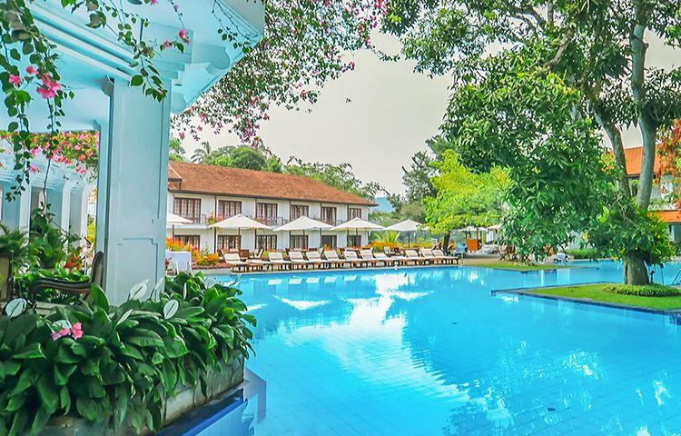
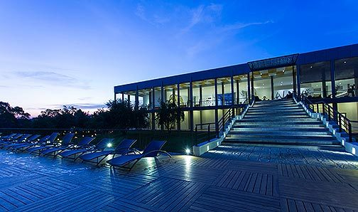
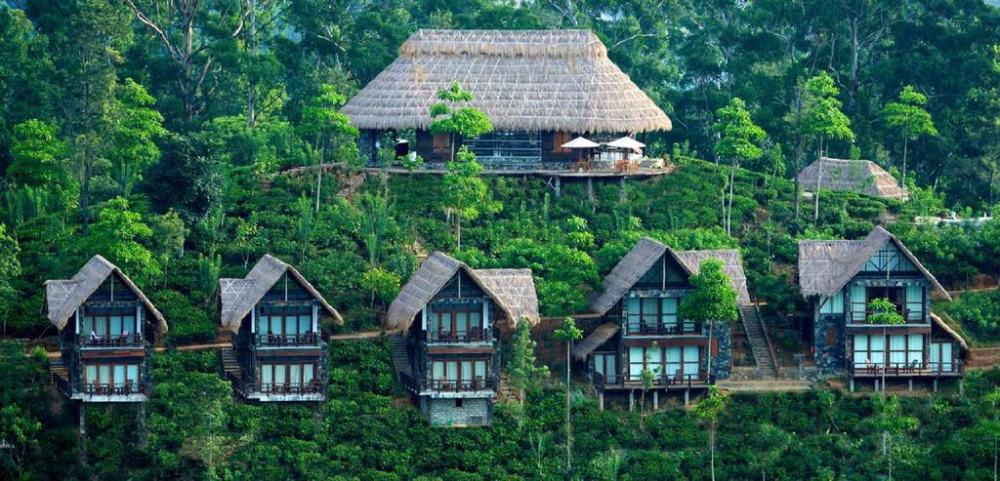
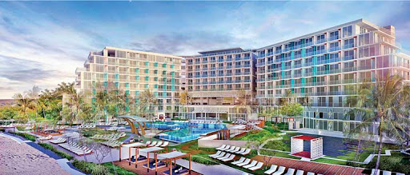
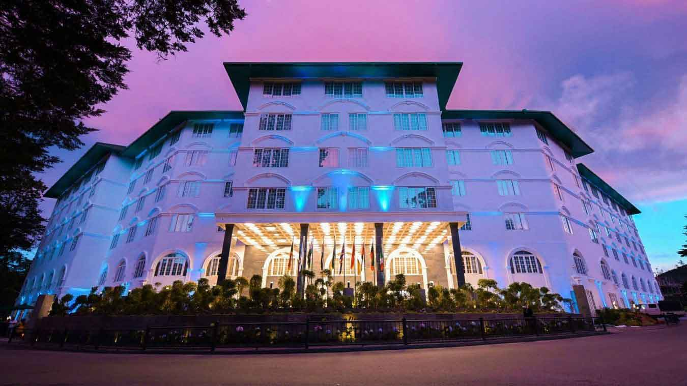

Accommodation
Mahaweli Reach-Kandy

Nestled beside the mighty Mahaweli River, Mahaweli Reach Hotel combines a sense of refined luxury
with the old-world charm of an ancient kingdom. Located at 488 meters above sea level, the city is
the hill capital of Sri Lanka which offers incredible culture and history all the way to authentic local life.
Visit the mahaweli reach official website
Aliya Resorts and Spa-Sigiriya

Aliya Resort and Spa is set amidst lush tropical foliage. Located right across from Sigiriya Rock,
the resort features an outdoor swimming pool, fitness center and 4 dining options.
At Aliya Resort and Spa, guests can enjoy a few games of badminton or relax with traditional massages.
Visit the Aliya Resorts and Spa official website
98 Acres - Ella

98 Acres Resort & Spa is a 5 star hotel.The property features a restaurant and Ella Rock is 1.2 mi away.
Featuring free Wi-Fi at the hotel, all rooms include a seating area, a flat-screen TV with satellite channels,
a kitchenette, a dining area and a private bathroom with free toiletries, a bath or shower and a hair dryer.
Visit the 98 Acres official website
Amari Galle- Galle

Located in the historic fort city of Galle on the southern coast of Sri Lanka,
Amari Galle is a luxury resort featuring rooms and suites, an outdoor pool with a pool bar,
spa and fitness center.The Resort also offers a dedicated Kids Club with a variety of supervised
activities to keep our young guests occupied.
Visit the Amari Galle official website
Araliya Green City-Nuwaraeliya

Located in Nuwara Eliya, 1.5 miles from Gregory Lake, Araliya Green City provides accommodation with a
restaurant, free private parking, a fitness centre and a bar.Popular points of interest near Araliya
Green City include Victoria Park of Nuwara Eliya, Nuwara Eliya Post Office and Mackwoods Museum.
Visit the Araliya Green City official website
Mandara Resort-Mirissa

Located on Mirissa Bay’s beach, Mandara Boutique Resort offers spacious rooms with private balconies
and sea views. The resort features free Wi-Fi, an outdoor pool and a gym.
Visit the Mandara Resort official website
See Our packages
See Our Deals